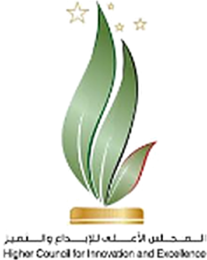
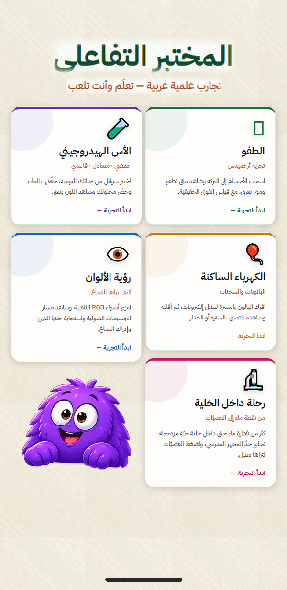
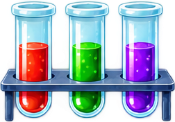
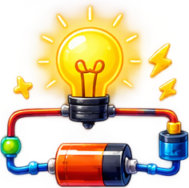
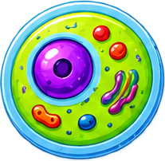

المنتدى الشبابي الثاني - الإبداع في ظل الذكاء الاصطناعي والتحول الرقمي
لأن لكل طفل في غزة حق التعلّم
بدعم من


صورة: طالبة في نقطة تعليمية photos/01-hook.webp
ياريتكانعنا
مختبر
أمل · طالبة في غزة

صورة خلفية: مختبر مدرسي متضرر photos/02-lab.jpg
+0
ألف طالب
الصفوف 7 · 8 · 9
0%
من مختبرات المدارس متضررة


صورة: يد طالب تمسك هاتفاًphotos/03-phone.webp



المختبر داخل المدرسة
صار في
يد الطالب
يد الطالب
مختبر علوم على الهاتف، بشكل لعبة
الصف 7–8وفق المنهاج
لا يحتاج إنترنتيعمل على الهاتف
يجرّب بنفسهويعوّض الفاقد التعليمي


010203
التجربة 1
الكهرباء الساكنة
فرك البالون ومراقبة الشحنات
التجربة 2
الطفو والغرق
لماذا يطفو جسم ويغرق آخر
التجربة 3
الرقم الهيدروجيني
قياس حموضة السوائل
+0.27
ارتفاع دافعية طلاب الرياضيات مع الألعاب الرقمية [2]
مناسب للطلاب الذين عانوا من صدمات الحرب
الخطأ
مسموح
مسموح
المساعد
بنفوش
يجيب عن أسئلة الطالب

سؤال من الطالب
كيف البالون بيلزق بالحيط؟لما تفركه بيكتسب شحنة، فبيجذب الشحنات المعاكسة في الحيط وبيلزق عليه.
ليش السماء زرقاء؟لأن الهواء بيبعثر الضوء الأزرق أكتر من باقي الألوان، فبيوصلك من كل ناحية.
كيف البالون بيلزق بالحيط؟لما تفركه بيكتسب شحنة، فبيجذب الشحنات المعاكسة في الحيط وبيلزق عليه.
شو يعني الشي حمضي؟يعني فيه أيونات هيدروجين كتير، وأسّه الهيدروجيني أقل من 7.
الضوءالكهرباءالحموضة
المنهجية
01المشكلة
02الأساس العلمي [3–6]
03التصميم
04النموذج الأولي
05التحقق
الذكاء الاصطناعي
يُرصد أثناء اللعب [7]
حركة اللمس والفأرة
التردد
زمن الاستجابة
التكرار
التأخر في البدء
نموذج الذكاء الاصطناعي
مؤشرات للمتابعة
خوف أو قلق
تأخر تعلّمي
تميّز في التعلّم
طيف التوحد
توصية
للمعلم أو الأخصائي
فرز أولي، والتشخيص للمختص
شكراً لكم
بدعم من